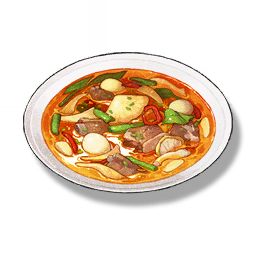

Jinzhou Stew
Supplies

Increases the attack power of all Resonators in the team by 80 and the Crit. Rate by 10% for 30 minutes, only effective for the player's Character in multiplayer games.
A stew comprised of mixed protein and vegetables. The popular Jinzhou family meal allows for the preservation of the ingredients' natural flavors to the maximum owing to its simplicity and versatility. "Jinzhou Stew, Jingzhou brew!"